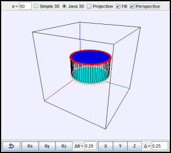

A polygon and line segments being used to approximate a cylinder.
The Affine Transformation in Three Dimensions example shows how to define objects using homogeneous coordinates and how to manipulate them using affine transformations represented by matrices. The model defines congruent polygons each having n vertices together with n line segments that connect the two polygons. Each polygon vertex transforms as a 3D point located at (x,y,z) and is stored using homogeneous 3D coordinates as a double[] {x,y,z,1} array. Data for each n-vertex polygon are stored in a double[n][4] array.
Because a directed line segment behaves like a vector (vx, vy, vz) and remains invariant under translation, it is stored using homogeneous 3D coordinates as a double[] {vx,vy,vz,0} array. Data for the line segments are stored in a double[n][4] array.
Exercise: Run the Affine Transformation in Three Dimensions example and use the control buttons to apply various transformations to the data. If two rotations are applied sequentially, does the order of the transformations matter? What if two translations are applied sequentially? A translation and a rotation? The fill option allows you to distinguish between the upper and lower polygon and the connecting segments. Examine the code for this model and note how the point and the line segment data are initialized and transformed.
A second window uses a 2D Plotting Panel to display an xy-projection of the polygon and vertex data. Use the mouse to rotate the 3D view so that the camera (eye) is located directly above the z-axis looking toward the origin. Are the 3D view and the 2D views similar? What is different? Apply various transformations and note that the 2D view often produces a misleading representation because it does not draw 2D polygons and line segments in the correct order. In a 2D Plotting Panel, the drawing order is determined by an object's location in the EJS Tree of Elements, not by its spatial location along the line of sight. The EJS 3D Implementation page describes the drawing algorithms that have been implemented within EJS to produce 3D representations.
The following EJS models are described in Chapter 17 of the EJS adaptation of An Introduction to Computer Simulation Methods available in the ComPADRE digital library.
The Affine Transformation in Three Dimensions example was developed by Wolfgang Christian using the Easy Java Simulations (EJS) modeling tool version 4.3. You can examine and modify the model for this simulation if you have EJS installed by right-clicking within the program and selecting "Open Ejs Model" from the pop-up menu.
Information about EJS is available at: <http://www.um.es/fem/Ejs/> and in the OSP ComPADRE collection <http://www.compadre.org/OSP/>.